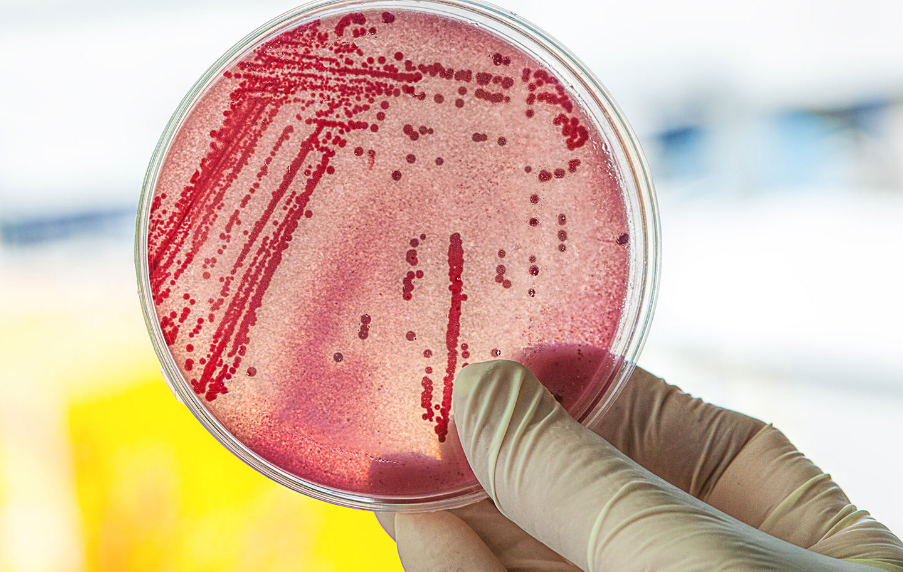
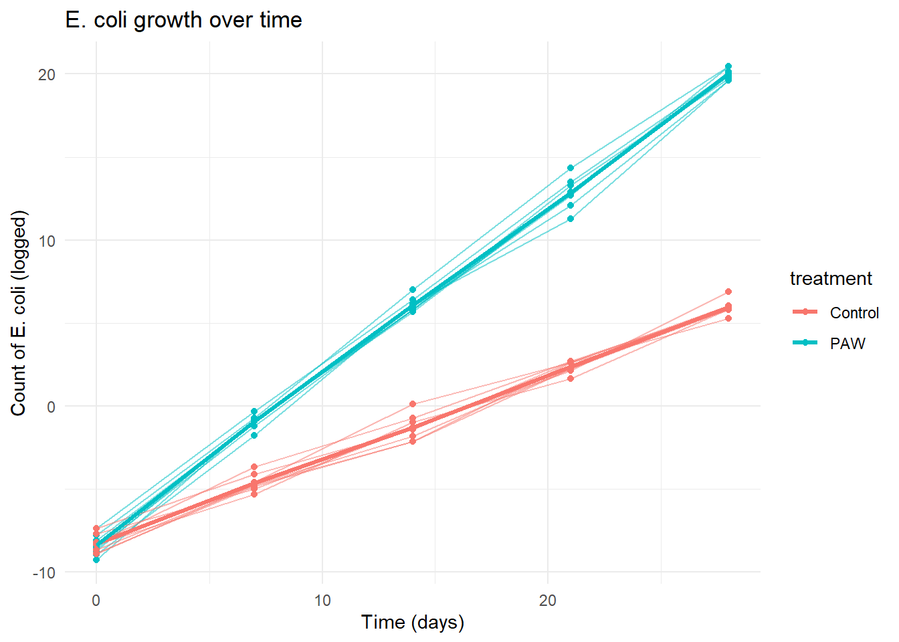
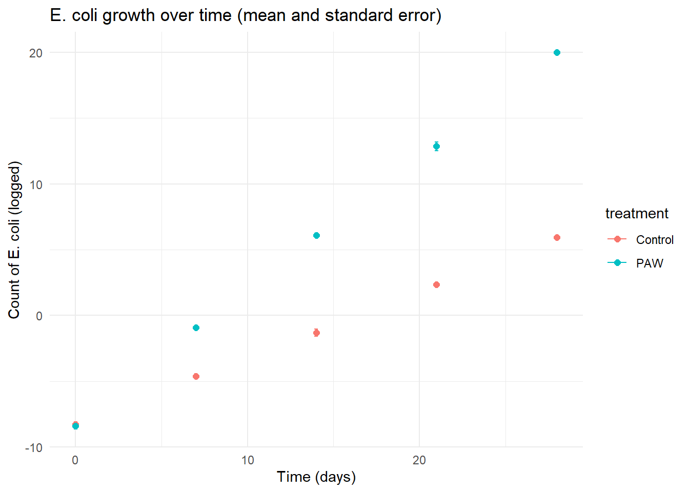
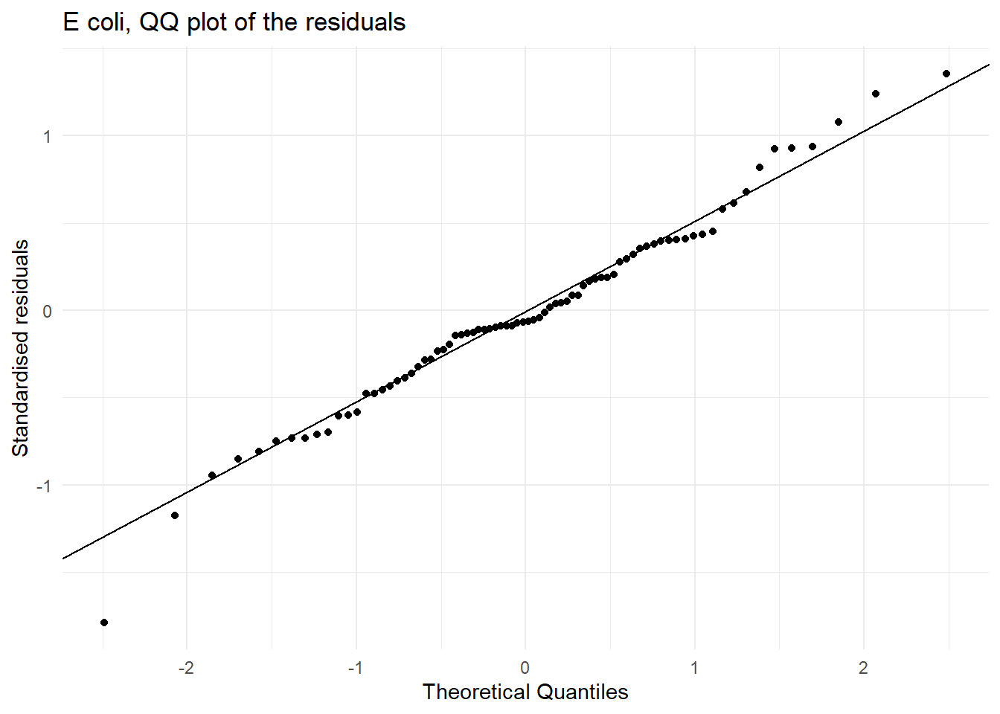
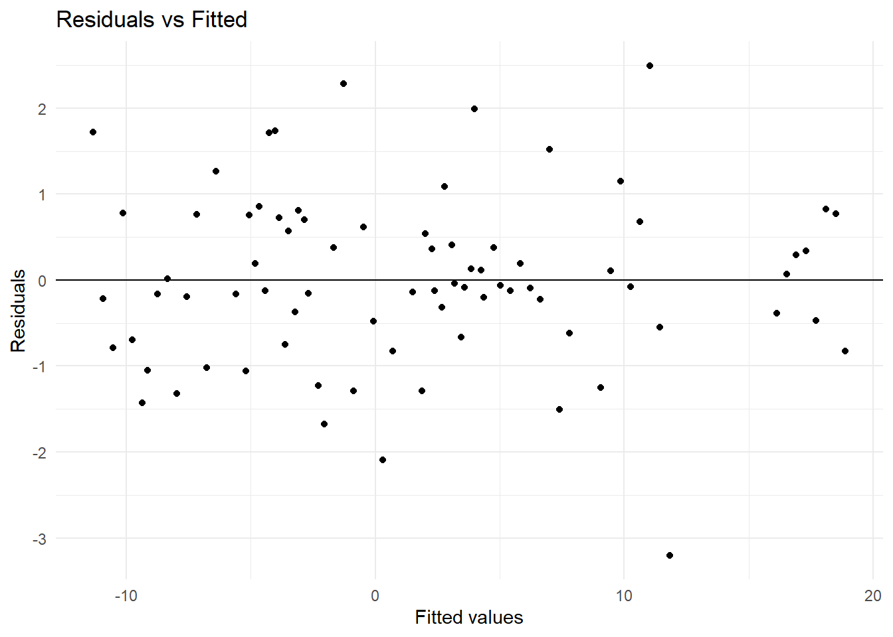

In this workshop, you will fit add simple random effects to model to account for simple experimental design elements. Workshop materials are available in the github repository ECS200.
In this lab we fit models which have both fixed effects and random effects. As a reminder these are fixed effects and random effects.
Fixed effects are the main variables of interest, the ones you want to estimate and interpret directly.
They represent the variables in your research question (say an association between distances from land in the context of coral reef health)
After modelling a researcher will focus on reporting co-efficients and p-value in context to provide insight into the research question(s).
Random effects are the structure of the data you need to take into account. This structure may exist because of the study design, grouping or clustering. These are sources of variation you’re not primarily interested in, but need to control for in the analysis. In any instance where independence was a concern this can be accounted for with a more sophisticated model than those we have introduced so far, by including random effects. In ecology, these often capture the experimental design components of the model.
In general, random effects can account for:
Spatial similarities (spatial autocorrelation: If sites are close to each other or you have multiple observations from a single locations
Repeated measures: You have more than one measurement for each unit (say over time, or replications) you can account for this with random effects
Clusters: If your units are in groups or clusters (say a tank or container) then random effects can account for this.
Visualisation of spatial similarities, or positive spatial autocorrelation.
Anytime two or more observations are more likely to be similar to each other for any reason (genetics, location, experimental design setup, etc) a random effects model should be considered. Note that these models can be quite complex, say the groups might have several layers (herd within farm within region) and those models are not explored here.
Our main questions is what is the impact on E. coli counts (which are a component of microbial contamination in Spirulina grown as a supplement for human consumption) of the plasma-activated water (PAW) as compared to the control. The study measured the E. coli counts at the start of the study, and every 7 days there after until day 28. The main interest is in the difference between conditions (PAW and control) and we include time as a secondary component of the fixed effects.

A petri dish with E. coli colonies.
Data processing
Here is the metadata for the e_coli.csv data.
flask: replicate units for each treatment (n = 8 per treatment).
day: number of days since the start of the experiment when measurements were taken.
treatment: Categorical variable with either the control treatment or plasma-activated water (PAW) treatment.
ecoli: the number of E. coli counted in CFU ml-1.
log_ecoli: log transformed E. coli count. (see Why Log scale section in week 5’s workshop for more detail).
library(tidyverse)## read in the datae_coli <-read.csv("https://raw.githubusercontent.com/nicholaswunz/ECS200-Workshop/refs/heads/main/data/e_coli.csv", stringsAsFactors = T)## take a looksummary(e_coli)
flask day treatment flask_re
Min. : 1.00 Min. : 0 Control:40 Min. :-0.37952
1st Qu.: 4.75 1st Qu.: 7 PAW :40 1st Qu.:-0.14196
Median : 8.50 Median :14 Median : 0.03600
Mean : 8.50 Mean :14 Mean : 0.07636
3rd Qu.:12.25 3rd Qu.:21 3rd Qu.: 0.19551
Max. :16.00 Max. :28 Max. : 0.53607
ecoli log_ecoli
Min. : 0 Min. :-9.2627
1st Qu.: 0 1st Qu.:-4.7377
Median : 3 Median : 0.8816
Mean : 51506004 Mean : 2.3627
3rd Qu.: 437 3rd Qu.: 6.0791
Max. :782085006 Max. :20.4775
Visualisation
Let’s plot E. coli growth over experimental time period (day 0 to 28) either with the overall mean +/- standard error across the two treatments plus individual replicate flasks (top figure), or overall mean +/- standard error across the two treatments only.
ggplot(e_coli, aes(x = day, y = log_ecoli, group = flask, colour = treatment)) +geom_line(alpha =0.5) +geom_point() +stat_summary(aes(group = treatment), fun = mean, geom ="line", linewidth =1.2) +theme_minimal() +labs(title ="E. coli growth over time",x ="Time (days)",y ="Count of E. coli (logged)")

# Plot the mean +/- standard error onlyggplot(e_coli, aes(x = day, y = log_ecoli, colour = treatment)) +stat_summary(fun.data = mean_se, geom ="errorbar", width =0.2) +stat_summary(fun = mean, geom ="point", size =2) +theme_minimal() +labs(title ="E. coli growth over time (mean and standard error)",x ="Time (days)",y ="Count of E. coli (logged)")

Modelling, Model Selection and Assumptions
In this section we will fit a one-way ANOVA with a random effect using the Error() function within aov() function and check the assumptions and model diagnostics.
The figures below are as follows:
QQ plot of the residuals to assess normality.
The fitted values versus the residuals. In this we are looking for an indication that there is change in the standardised residuals over the range of the fitted values to support an assessment of the assumption of equal variances. There should be an equal number of residual above zero and below zero, and not too many standardised residuals more extreme than -2 and 2.
## fit the modelanova_model <-aov(log_ecoli ~ treatment * day +Error(flask), data = e_coli)## focus on the within flask variability model_within <- anova_model$Within diag_e_coli <-data.frame(fitted =fitted(model_within),resd=residuals(model_within))ggplot(diag_e_coli, aes(sample = resd)) +stat_qq() +stat_qq_line() +theme_minimal() +labs(title ="E coli, QQ plot of the residuals",x ="Theoretical Quantiles",y ="Standardised residuals")

ggplot(diag_e_coli, aes(x = fitted, y =scale(resd))) +geom_point() +geom_hline(yintercept =0) +theme_minimal() +labs(title ="Residuals vs Fitted",x ="Fitted values",y ="Residuals" )

Assumption
Check
Met
Normality of residuals
The residuals follow the QQ fairly line closely.
This assumption is met.
Residuals vs fitted values
We expect not too many residuals beyond -2 and 2 and no structure over the fitted values.
This assumption is met.
Independence
We have accounted for the experimental design by including a flask term in the modelling
This assumption has been addresses
All the assumptions are met. We can now look at the model itself.
summary(anova_model)
Error: flask
Df Sum Sq Mean Sq
treatment 1 753.9 753.9
Error: Within
Df Sum Sq Mean Sq F value Pr(>F)
treatment 1 257 257 820.9 <2e-16 ***
day 1 4503 4503 14369.5 <2e-16 ***
treatment:day 1 494 494 1577.8 <2e-16 ***
Residuals 75 24 0
---
Signif. codes: 0 '***' 0.001 '**' 0.01 '*' 0.05 '.' 0.1 ' ' 1
Plotting the predictions is tricky (it is much easier to do with more advanced approaches to linear mixed models and random effects) but we can clearly we what is happening from the data.
Interpretation
On the log scale the growth in E. coli bacteria is linear for both the control and PAW, however the growth of bacteria in PAW is about double that of the control group. The p-values for treatment, day and the interaction of treatment and day are all <0.001.